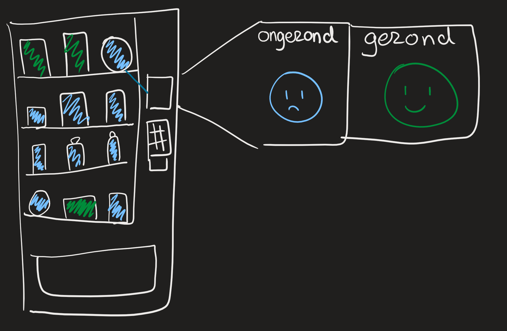

New Playful Interaction Concept
Tegenwoordig zijn er op de HHS locaties allerlei snack automaten waar studenten en docenten snel en gemakkelijk eten van kunnen kopen. Wat vaak het geval is, is dat deze eten ongezond is en veel calorieën bevat. Merendeel van de tijd realiseren de studenten en docenten dit niet. Om een gezonder levenstijl te realiseren op school voor de studenten en docenten komt er in de automaten een nieuwe vorm van playful interaction.BIj het betalen voor je snack laat de machine zien hoeveel calorieën in de snack zitten en speelt het een geluidje af afhankelijk van hoe gezond de snack is. Er wordt dan ook een emoticons weergeven hoe gezond de snack is die je gekocht hebt.
De spelers gaan de interactie aan met het concept zodra zij een snack aanschaffen bij de machine. De machine laat dan na het betalen zien hoe gezond de snack is door middel van geluiden, tekst en beeld. BIjvoorbeeld als de snack ongezond is komt er op de scherm van de automaat een tekst met “In deze snicker zit zoveel calorieën in.” Waarna bij het laten van de snicker in de bak een geluidje wordt afgespeelt om de gebruiker/ speler te laten horen dat het geen gezonde keuze was. Met op het eind nog met een boze emoticon op het scherm voordat de speler/ gebruiker wegloopt met hun aankoop. Op een technologische gebied werkt dit systeem simpel. De snackautomaat heeft een database met verschillende beelden, geluiden en teksten afhankelijk van de soort snack. Zodra een snack wordt betaald door de gebruiker weet de automaat welke, beeld, geluid en tekst moet weergeven.